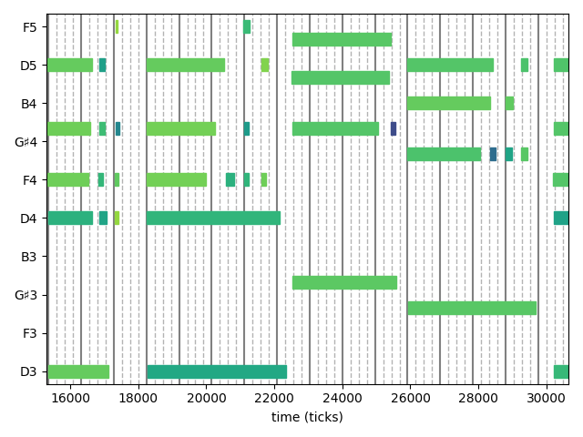
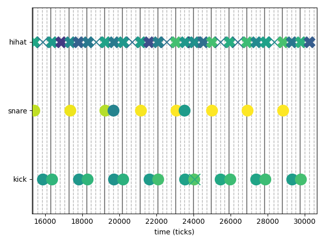

Plotting Notes
With MusicVisualizations it is possible to plot Notes similarly to a "piano roll" that DAW like Cubase use. This is achieved with the noteplotter function, which uses PyPlot.
MusicVisualizations.noteplotter — Functionnoteplotter(notes::Notes; kwargs...)Plot the given notes on a "piano roll" like setting with
- x axis being the position of the notes
- y axis being the "pitch" or "value" of the notes (see below)
- color being the velocity of the notes
Then return the values of the y axis.
Keywords
st = (notes[1].position ÷ notes.tpq) * notes.tpqtime to start plotting fromfi = st + 16notes.tpqtime to stop plotting at, by default 16 quarter notes, i.e. four bars. GiveInfif you want to plot until the end of the notes.ax = (PyPlot.figure(); PyPlot.gca())the axis to plot on.cmap = "viridis"the colormap to use for the velocity.grid = 0:0.25:1a grid to plot along with the notes (by default the 16th notes). Give nothing if you don't want grid lines to be plotted.names: a dictionary that given the y-axis value returns how this value should be named. By default the functionpitch_to_nameis used, along with a heuristic to only name around 7 notes.plotnote!A function with call argumentsplotnote!(ax, note, cmap)(withcmapa colormap instance, not a string), that actually plots the notes. By default plots a "piano-roll".
The plotnote! argument allows for customization. The function is supposed to plot a note on the given axis and return the "value" of the note. See the official documentation for an example of how this is taken advantage of to e.g. plot drum notes.
Piano notes
using MusicVisualizations, PyPlot
# MusicVisualizations reexports MusicManipulations for convenience
# load a band performance (with metronome)
midi = readMIDIFile(joinpath(@__DIR__, "mfi_grapevine_1.mid"))
grid = 0:1//4:1
piano = getnotes(midi, 4)819 Notes with tpq=960
Note F4 | vel = 99 | pos = 8981, dur = 1217
Note A4 | vel = 99 | pos = 8981, dur = 1275
Note D5 | vel = 97 | pos = 8990, dur = 1314
Note D3 | vel = 97 | pos = 9004, dur = 1772
Note D4 | vel = 81 | pos = 9015, dur = 1287
Note F4 | vel = 84 | pos = 10496, dur = 130
Note A4 | vel = 87 | pos = 10504, dur = 175
⋮
Note E5 | vel = 87 | pos = 310837, dur = 114
Note F5 | vel = 81 | pos = 311276, dur = 233
Note G4 | vel = 82 | pos = 311284, dur = 196
Note B4 | vel = 58 | pos = 311286, dur = 197
Note G4 | vel = 92 | pos = 311739, dur = 197
Note E5 | vel = 99 | pos = 311744, dur = 181
Note B4 | vel = 56 | pos = 311782, dur = 104noteplotter(piano; st = 15300, grid = grid)
Drum notes
The nice thing about noteplotter is that it is fully customizable, via its argument plotnote!. In this section we show an example of how noteplotter can be used to plot drum notes in drum notation, similarly to Cubase's GM Map.
The first step is defining a specific function for plotnote!. Since the duration of the notes does not have meaning in this case, we can just scatter plot their position. Also, we can use different symbols for different drum parts, e.g. circles for snare and bass drum and Xs for hihat and cymbals.
function plotdrumnote!(ax, note, cmap)
p = note.pitch
if p == 0x24 # kick
v, m = 1, "o"
elseif p ∈ (0x26, 0x28) # snare
v, m = 3, "o"
elseif p ∈ (0x16, 0x1a) # hihat rim
v, m = 5, "X"
elseif p ∈ (0x2e, 0x2a) # hihat head
v, m = 5, "x"
elseif p == 0x35 # ride bell
v, m = 6, "D"
elseif p == 0x33 # ride head
v, m = 6, "x"
elseif p == 0x3b # ride rim
v, m = 6, "X"
elseif p ∈ (0x30, 0x32) # tom 1
v, m = 4, "s"
elseif p ∈ (0x2b, 0x3a) # tom 3
v, m = 2, "s"
elseif p ∈ (0x31, 0x37, 0x34, 0x39)
v, m = 7, "X"
elseif p == 0x2c # hihat foot
v, m = 1, "x"
else
error("Unknown pitch $(UInt8(p))")
end
ax.scatter(note.position, v, marker = m, s = 250,
color = cmap(min(note.velocity, 127)/127))
return v
endplotdrumnote! (generic function with 1 method)(notice that the above function is hand-tailored for a specific e-drumset)
To make things even prettier, one can also use custom names for the notes:
TD50_PLOT = Dict(
1 => "kick",
3 => "snare",
5 => "hihat",
6 => "ride",
4 => "tom1",
2 => "tom3",
7 => "crash",
)Dict{Int64, String} with 7 entries:
5 => "hihat"
4 => "tom1"
6 => "ride"
7 => "crash"
2 => "tom3"
3 => "snare"
1 => "kick"And now here is how plotting some drum notes looks like:
drums = getnotes(midi, 3)
drums = translate(drums, -300) # constant delay
noteplotter(drums; st = 15300, grid = grid,
names=TD50_PLOT, plotnote! = plotdrumnote!)